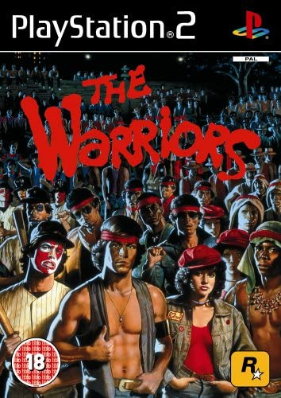
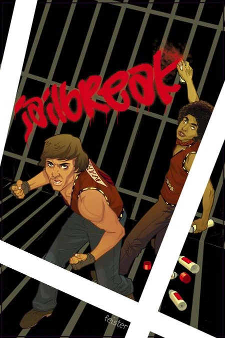
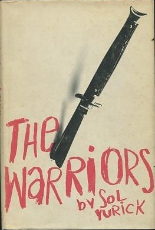

La existencia de su juego para Play Station 2 por parte de Rockstar es lo mejor que pudieron haber inventado. Saliendo dicho juego en octubre del 2005, junto con una remasterización de la película en formato DVD. En el juego lo que hicieron es recrear plano por plano todo el metraje donde los mismos actores de la película hacen las voces. En el juego se desarrolla el trasfondo, debido a que el juego rellena algunos huecos que la película dejo abiertos, ya que en el juego tiene más historia, remontándonos a los inicios de los Warriors, iniciaciones de los miembros, más aventuras de los Warriors, sucesos antes de la reunión y diversas pandillas que no se alcanzaron a ver en la película y sus lideres. El juego no cambió la caratula original de la película, el caos que produce en pantalla refleja el ambiente de una pelea callejera donde en cualquier momento puede volar una botella, revolverse en el suelo, salir a empujones, etc. En otros juegos los enemigos muchas veces esperan amablemente a que les llegue el turno, pero en este juego si tienes a 4 enemigos rodeándote, golpearan por la espalda por lo que hay que estar pendiente al resto de los Warriors que ayudan. Añadiendo a este último a que también existe la opción de dar órdenes, gracias a esta y más mecánicas lo convierte en un juego único.
Existe un comic que funciona como secuela, cuyo comic lleva por título JailBreak el cual consiste en los sucesos luego de la primera película y los Warriors ahora liderados por Swan. El cual quiere liberar a Ajax, el cual está encerrado en prisión junto con diversos miembros de otras pandillas, pero siempre en conflicto con un baseball furie cuya celda se encuentra al lado. En los Warriors se aprecia la interacción de varios personajes junto con sus historias como Swan visitando a Mercy por la ventana y Rembrandt en clase con su profesor de arte. Incluso Swan de los Warriors y Masai actual líder de los Riffs planeando la fuga de prisión de sus compañeros, cuyo plan consiste en una pelea de Warriors contra los Riffs en frente de la prisión para que los policías salieran y ellos dos pudieran entrar a rescatar a todos y lo logran. Finalizando con Ajax de nuevo en los Warriors reconociendo a Swan como su líder, Swan reencontrándose con Mercy para que ella se quede con él y con Rembrandt regresando a asistir a sus clases de arte.
La película de los Warriors de basa en un libro que tiene el mismo título, pero con el autor Sol Yurik y es ilustrada por Frank Modell en 1965, pero el libro contiene ciertos cambios como los nombres de los personajes principales, nombres de las pandillas y su realismo. Ya que la novela analiza mas de cerca los conceptos de sexualidad, reputación, familia y supervivencia.
